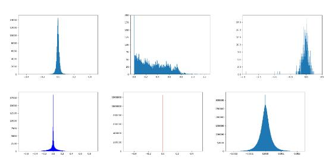
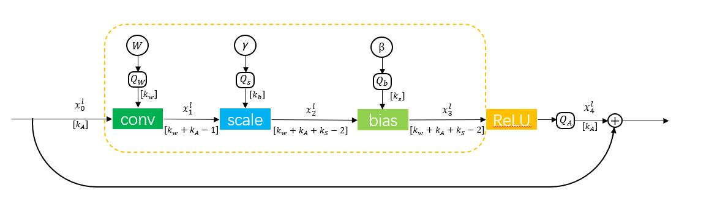
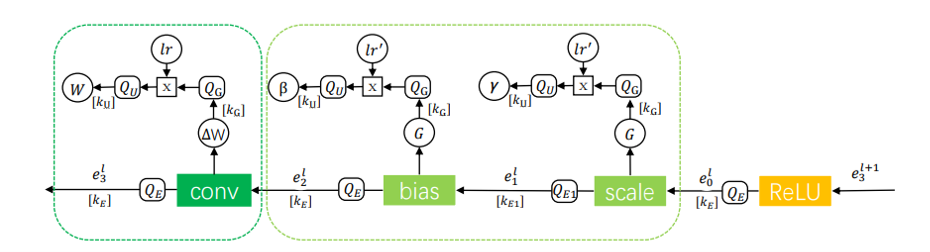
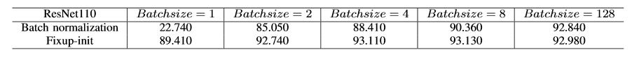

Project Detail page
Investigation on Removing Batch Normalization for Efficient Full 8-bit Integer DNN Online Training07/2019 – 11/2020
Part-time Research Assistant
Supervisor: Guoqi Li
Step One:
◼ Reproduction and Exploration of Thesis
• 8-bit Quantization

➢ Referred to the paper's method and trained the ResNet network with ImageNet data set in the 8-bit data stream.
➢ Utilized direct Quantization, constant Quantization, shift Quantization and other quantitative methods to quantize the data from 32-bit to 8-bit based on WAGEUBN, and observed the impact of the data stream.
• Deep Neural Network without Batch Normalization (BN)
➢ Applied Tensorflow to reproduce FixupNet and obtained the identical results as the original paper with ImageNet data set.
Step Two:
◼ Model Fusion based on 8-bit and without BN


• Migrated all the quantitative methods mentioned above to FixupNet and screened the current quantitative methods by control variable method.
• Utilized quantization methods based on WAGEUBN to quantize the parameters in FixupNet, it is found that the accuracy of 8-bit DNN without BN has little influence.
• Quantified the whole forward propagation and backward propagation to 8-bit respectively.
• For the backward propagation, the scale error needed to utilize additional flag quantification method, and then tested the model to get the training method with the least impact on accuracy.
Step Three:
◼ Feasibility Verification and Analysis
• Analyzed the L2 normal form of gradient updating to find the network reaches block dynamic isometry (BDI) when the average trace of the Jacobian matrix of each block approaches to 1.
• Analyzed the ResNet with BN and FixupNet without BN with mathematical theory, and they both reached BDI.
• For the shortcomings of BN in small batch size, and the network without BN can be trained in small batch size for theoretical proof. And utilized ResNet-110 to verify the above content.
Step Four:
◼ Result
• Compared with ResNet-34 and ResNet-50, the accuracy of 8bit-Fixup34 and 8bit-Fixup50 models is only 1.69% and 3.46% lower than the former.
• For ResNet-110 network models with different batch (1, 2, 4, 8,128), the accuracy of the model with BN is 22.74%, 85.05%, 88.41%, 90.36% and 92.84%, respectively, while without BN is 89.41%, 92.74%, 93.11%, 93.13% and 92.98%.

◼ Conclusions
• Batch Normalization can be replaced by appropriate initialization in the large DNN such as ResNet-110 and ResNet-101 to reduce the complex operations during the forward and backward propagation of BN. And provide a possibility to reduce the memory cost (training a DNN without large batch size).
• The 8bit neural network training in the case of small batch size is realized, and the accuracy loss is almost 0. And the memory required for training is reduced by more than ten times.
• A quantization method for networks without BN is proposed. Compared with the previous work using BN, this method can still maintain a very high accuracy while ensuring a small loss of accuracy. Even when without BN, training in small batches can be achieved without affecting accuracy